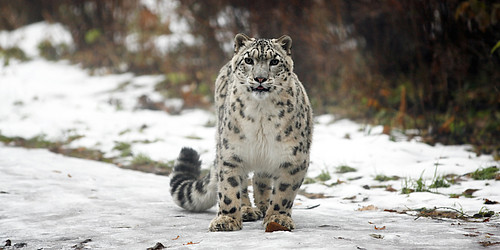

Learn More About the Snow Leopard
Back to Zoo
Back to Home
Habitat
The red wolf (Canis rufus) is a critically endangered species native to the southeastern United States.
Diet
Red wolves are smaller than gray wolves and have a reddish-tan coat with some black along their backs.
Conservation

Conservation efforts are ongoing to protect the remaining population of red wolves in the wild.